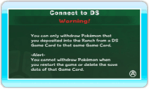
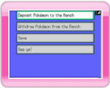
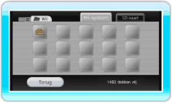

13 |
Een verbinding maken met de DS |
 |
Je kunt Pokémon die je hebt gevangen in Pokémon Diamond of Pokémon Pearl overbrengen en terughalen naar je DS.

Wii-scherm Als je CONNECT TO DS (een verbinding maken met de DS) in het hoofdmenu van My Pokémon Ranch selecteert, verschijnt het scherm dat je hier rechts ziet. Druk na het lezen van de waarschuwing op Als het scherm van My Pokémon Ranch verandert in het onderstaande voorbeeld, zet dan je DS met ingestoken Pokémon Diamond of Pokémon Pearl Game Card aan. Kies CONNECT TO Wii (een verbinding maken met de Wii) in het hoofdmenu van Pokémon Diamond of Pokémon Pearl.
Als de verbinding met de Nintendo DS is gelukt, zijn de onderstaande schermen op beide systemen (Wii en DS) te zien. Vanaf dat moment bestuur je het spel met je DS. De eerste keer dat je een verbinding maakt met je DS zul je echter een verzorger voor de Wii (My Pokémon Ranch) moeten kiezen. Opmerking: je kunt de verzorger op elk gewenst moment wijzigen.

DS-scherm Op de Nintendo DS verschijnt het hoofdmenu. Maak een keuze en druk op
Lees “14. Pokémon overbrengen” of “15. Pokémon terughalen” om verder te gaan met het maken van een verbinding met je DS.

Wii-scherm ● Overgebrachte Pokémon De gegevens van de ranch worden opgeslagen in het Wii-systeem. Let op: Als je je spelgegevens wist, worden alle geplaatste Pokémon gewist en kun je ze niet terughalen. Eenmaal gewiste spelgegevens kunnen niet worden hersteld. |
 .
. |
 |
 |